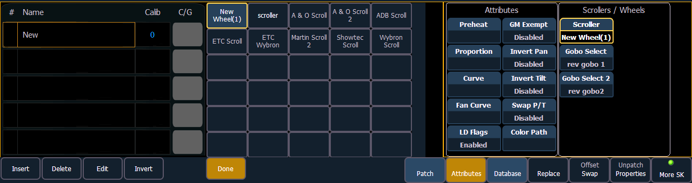
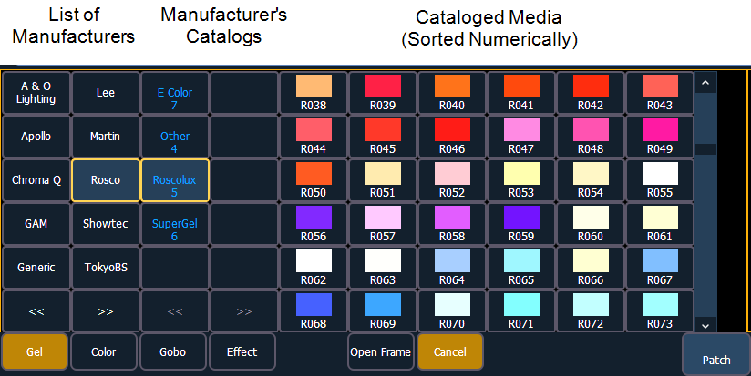

When you create a new scroll or wheel, {New Wheel n} appears in the wheel list as the selected button. The frame list will be empty with only “New” displayed in frame 1.

You can label the new wheel by pressing [Label] and typing the desired label on the virtual keyboard and pressing {Enter}.
To select a color or pattern for the specific frame in the scroll/wheel, select the “NEW” text and press {Edit} or click the gray box in the C/G column of the frame. The available gel, color, gobo and effect media selections will be displayed.

The media selection includes the following softkeys:
When a manufacturer is selected from the list, the catalog selection changes to display only the selected manufacturer’s offerings. When a specific catalog is selected, the selected media will display.
When you make a media selection, the display returns to the new wheel frame list where additional frames can be added to the scroll or wheel by selecting the next frame area to add more frames.
Note: An {Invert} softkey will display when creating or copying a wheel or scroller. {Invert} is used to reverse the order of frames.
Note: It is possible to import custom gobo images. See Importing Custom Gobo Images for more information. To use a custom gobo image, select {Gobo} and then {Custom}.